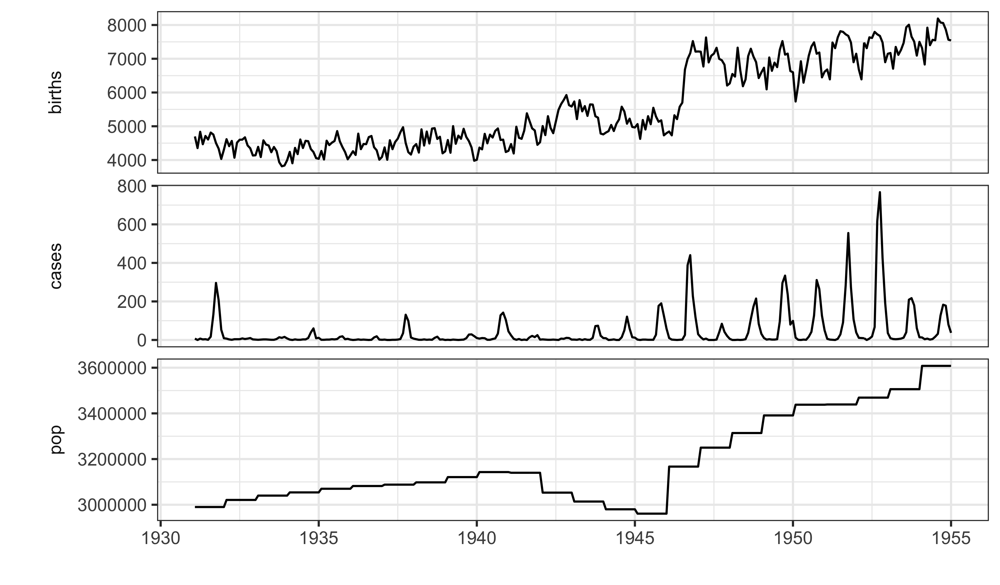
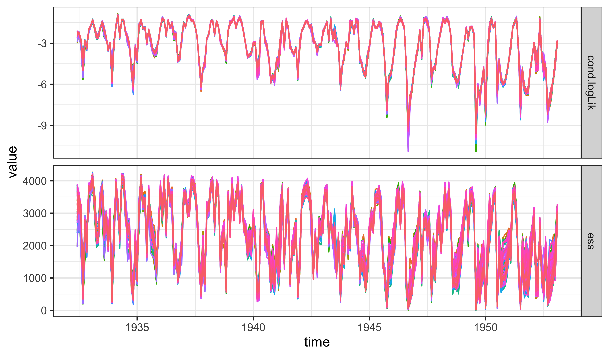
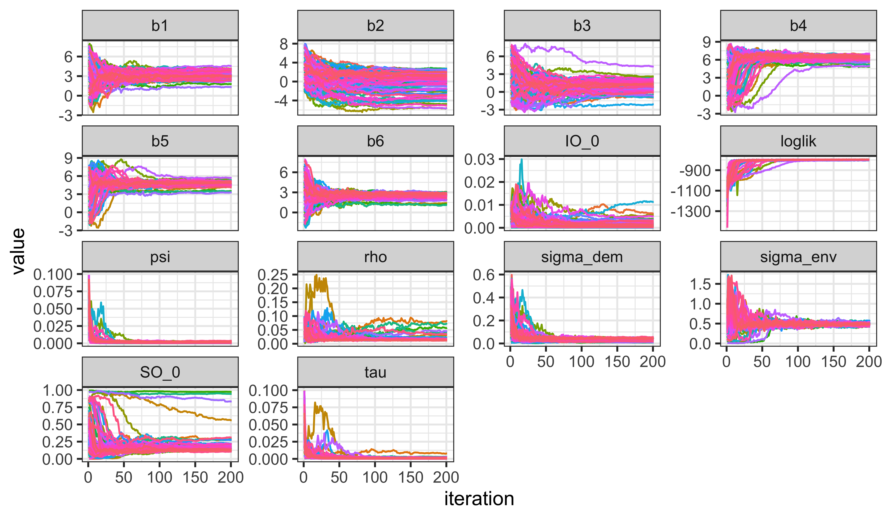
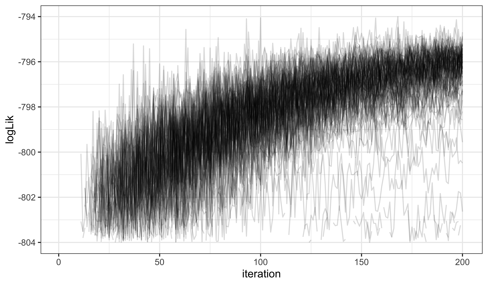

source("../_includes/setup.R", local = knitr::knit_global())Lesson 6: Case study: polio
Objectives
Demonstrate the use of covariates in pomp to add demographic data (birth rates and total population) and seasonality to an epidemiological model.
Show how partially observed Markov process (POMP) models and methods can be used to understand transmission dynamics of polio.
Practice maximizing the likelihood for such models. How to set up a global search for a maximum likelihood estimate. How to assess whether a search has been successful.
Provide a workflow that can be adapted to related data analysis tasks.
Covariates
Reviewing covariates in time series analysis
Suppose our time series of primary interest is \(y_{1:N}\).
A covariate time series is an additional time series \({z_{1:N}}\) which is used to help explain \(y_{1:N}\).
When we talk about covariates, it is often implicit that we think of \({z_{1:N}}\) as a measure of an external forcing to the system producing \(y_{1:N}\). This means that the process generating the data \({z_{1:N}}\) affects the process generating \(y_{1:N}\), but not vice versa.
For example, the weather might affect human health, but human health has negligible effect on weather: weather is an external forcing to human health processes.
When the process leading to \({z_{1:N}}\) is not external to the system generating it, we must be alert to the possibility of reverse causation and confounding variables.
Including covariates in the general POMP framework
The general POMP modeling framework allows essentially arbitrary modeling of covariates.
Recall that a POMP model is specified by defining, for \(n=1:N\), \[\begin{array}{l} f_{X_{0}}(x_0\params\theta), \\ f_{X_{n}|X_{n-1}}(x_{n}\given x_{n-1}\params\theta), \\ f_{Y_{n}|X_n}(y_{n}\given x_n\params\theta). \end{array}\]
The possibility of a general dependence on \(n\) includes the possibility that there is some covariate time series \(z_{0:N}\) such that \[\begin{array}{lcl} f_{X_{0}}(x_0\params\theta)&=& f_{X_{0}}(x_0\params\theta,z_0) \\ f_{X_{n}|X_{n-1}}(x_{n}\given x_{n-1}\params\theta) &=& f_{X_{n}|X_{n-1}}(x_{n}\given x_{n-1}\params\theta,z_n), \\ f_{Y_{n}|X_n}(y_{n}\given x_n\params\theta) &=& f_{Y_{n}|X_n}(y_{n}\given x_n\params\theta,z_n). \end{array}\]
Seasonality in a POMP model
One specific choice of covariates is to construct \(z_{0:N}\) so that it fluctuates periodically, once per year. This allows seasonality enter the POMP model in whatever way is appropriate for the system under investigation.
All that remains is to hypothesize what is a reasonable way to include covariates for your system, and to fit the resulting model.
Now we can evaluate and maximize the log-likelihood, we can construct AIC or likelihood ratio tests to see if the covariate helps describe the data.
This also lets us compare alternative ways the covariates might enter the process model and/or the measurement model.
Covariates in the pomp package
pomp provides facilities for including covariates in a pomp object.
Named covariate time series entered via the
covarargument topompare automatically defined within C snippets used for therprocess,dprocess,rmeasure,dmeasureandrinitarguments.We see this in practice in the following epidemiological model, which has population census, birth data and seasonality as covariates.
Polio in Wisconsin
The massive global polio eradication initiative (GPEI) has brought polio from a major global disease to the brink of extinction.
Finishing this task is proving hard, and improved understanding polio ecology might assist.
Martinez-Bakker, King, and Rohani (2015) investigated this using extensive state level pre-vaccination era data in USA.
We will follow the approach of Martinez-Bakker, King, and Rohani (2015) for one state (Wisconsin). In the context of their model, we can quantify seasonality of transmission, the role of the birth rate in explaining the transmission dynamics, and the persistence mechanism of polio.
- Martinez-Bakker, King, and Rohani (2015) carried out this analysis for all 48 contiguous states and District of Columbia, and their data and code are publicly available. The data we study, in
polio_wisconsin.csv, consist ofcases, the monthly reported polio cases;births, the monthly recorded births;pop, the annual census;time, date in years.
library(tidyverse)
data <- read_csv(
"https://kingaa.github.io/sbied/polio/polio_wisconsin.csv",
comment="#")
head(data,5)# A tibble: 5 × 4
time cases births pop
<dbl> <dbl> <dbl> <dbl>
1 1931. 7 4698 2990000
2 1931. 0 4354 2990000
3 1931. 7 4836 2990000
4 1931. 3 4468 2990000
5 1931. 4 4712 2990000
We use the compartment model of Martinez-Bakker, King, and Rohani (2015).
Compartments representing susceptible babies in each of six one-month birth cohorts (\(S^B_1\),…,\(S^B_6\)), susceptible older individuals (\(S^O\)), infected babies (\(I^B\)), infected older individuals (\(I^O\)), and recovered with lifelong immunity (\(R\)).
The state vector of the disease transmission model consists of numbers of individuals in each compartment at each time, \[X(t)=\big(S^B_1(t),...,S^B_6(t), I^B(t),I^O(t),R(t) \big).\]
Babies under six months are modeled as fully protected from symptomatic poliomyelitis.
Older infections lead to reported cases (usually paralysis) at a rate \(\rho\).
The flows through the compartments are graphically represented on the following slide (Figure 1A of Martinez-Bakker, King, and Rohani (2015)):
Duration of infection is comparable to the one-month reporting aggregation, so a discrete time model may be appropriate.
Martinez-Bakker, King, and Rohani (2015) fitted monthly reported cases, May 1932 through January 1953, so we set \(t_n=1932+ (4+n)/12\) and \[X_n=X(t_n)=\big(S^B_{1,n},...,S^B_{6,n}, I^B_n,I^O_n,R_n \big).\]
The mean force of infection, in units of \(\mathrm{yr}^{-1}\), is modeled as \[\bar\lambda_n=\left( \beta_n \frac{I^O_n+I^B_n}{P_n} + \psi \right)\] where \(P_n\) is census population interpolated to time \(t_n\) and seasonality of transmission is modeled as \[\beta_n=\exp\left\{ \sum_{k=1}^K b_k\xi_k(t_n) \right\},\] with \(\{\xi_k(t),k=1,\dots,K\}\) a periodic B-spline basis with \(K=6\).
\(P_n\) and \(\xi_k(t_n)\) are covariate time series.
The force of infection has a stochastic perturbation, \[\lambda_n = \bar\lambda_n \epsilon_n,\] where \(\epsilon_n\) is a Gamma random variable with mean 1 and variance \(\sigma^2_{\mathrm{env}} + \sigma^2_{\mathrm{dem}}\big/\bar\lambda_n\). These two terms capture variation on the environmental and demographic scales, respectively. All compartments suffer a mortality rate, set at \(\delta=1/60\mathrm{yr}^{-1}\).
Within each month, all susceptible individuals are modeled as having exposure to constant competing hazards of mortality and polio infection. The chance of remaining in the susceptible population when exposed to these hazards for one month is therefore \[p_n = \exp\big\{ -(\delta+\lambda_n)/12\big\},\] with the chance of polio infection being \[q_n = (1-p_n)\lambda_n\big/(\lambda_n+\delta).\]
- We employ a continuous population model, with no demographic stochasticity. Writing \(B_n\) for births in month \(n\), we obtain the dynamic model of Martinez-Bakker, King, and Rohani (2015): \[\begin{array}{rcl} S^B_{1,n+1}&=&B_{n+1}\\ S^B_{k,n+1}&=&p_nS^B_{k-1,n} \quad\mbox{for $k=2,\dots,6$}\\ S^O_{n+1}&=& p_n(S^O_n+S^B_{6,n})\\ I^B_{n+1}&=& q_n \sum_{k=1}^6 S^B_{k,n}\\ I^O_{n+1}&=& q_n S^O_n \end{array}\]
The measurement model
- The model for the reported observations, conditional on the state, is a discretized normal distribution truncated at zero, with both environmental and Poisson-scale contributions to the variance: \[Y_n= \max\{\mathrm{round}(Z_n),0\}, \quad Z_n\sim\mathrm{normal}\left(\rho I^O_n, \big(\tau I^O_n\big)^2 + \rho I^O_n\right).\]
Initial conditions
Additional parameters are used to specify initial state values at time \(t_0=1932+ 4/12\).
We will suppose there are parameters \(\big(\tilde S^B_{1,0},...,\tilde S^B_{6,0}, \tilde I^B_0,\tilde I^O_0,\tilde S^O_0\big)\) that specify the population in each compartment at time \(t_0\) via \[ \hspace{-2mm} S^B_{1,0}= {\tilde S}^B_{1,0} ,...,S^B_{6,0}= \tilde S^B_{6,0}, \quad I^B_{0}= P_0 \tilde I^B_{0},\quad S^O_{0}= P_0 \tilde S^O_{0}, \quad I^O_{0}= P_0 \tilde I^O_{0}.\]
Following Martinez-Bakker, King, and Rohani (2015), we make an approximation for the initial conditions of ignoring infant infections at time \(t_0\). Thus, we set \(\tilde I^B_{0}=0\) and use monthly births in the preceding months (ignoring infant mortality) to fix \(\tilde S^B_{k,0}=B_{1-k}\) for \(k=1,\dots,6\).
Estimated initial conditions are specified by \(\tilde I^O_{0}\) and \(\tilde S^O_{0}\), since the initial recovered population, \(R_0\), is obtained by subtracting all other compartments from the total initial population, \(P_0\).
It is convenient to parameterize the estimated initial states as fractions of the population, whereas the initial states fixed at births are parameterized directly as a count.
A representation of the POMP model
Building a pomp object for the polio model
- We code the state variables, and the choice of \(t_0\), as
statenames <- c("SB1","SB2","SB3","SB4","SB5","SB6",
"IB","SO","IO")
t0 <- 1932+4/12- We do not explicitly code \(R\), since it is defined implicitly as the total population minus the sum of the other compartments. Due to lifelong immunity, individuals in \(R\) play no role in the dynamics. Even occasional negative values of \(R\) (due to a discrepancy between the census and the mortality model) would not be a fatal flaw.
Setting up the covariate table
timegives the time at which the covariates are defined.Pis a smoothed interpolation of the annual census.Bis monthly births.xi1,...,xi6is a periodic B-spline basis
library(pomp)
K <- 6
covar <- covariate_table(
t=data$time,
B=data$births,
P=predict(
smooth.spline(x=1931:1954,y=data$pop[seq(12,24*12,by=12)]),
x=data$time)$y,
periodic_bspline_basis(t,nbasis=K,
degree=3,period=1,names="xi%d"),
times="t"
)Regular parameters and initial value parameters
- The parameters \(b_1,\dots,b_\mathrm{K},\psi,\rho,\tau,\sigma_\mathrm{dem}, \sigma_\mathrm{env}\) in the model above are {regular parameters} (RPs), coded as
rp_names <- c("b1","b2","b3","b4","b5","b6",
"psi","rho","tau","sigma_dem","sigma_env")- The {initial value parameters} (IVPs), \(\tilde I^O_{0}\) and \(\tilde S^O_{0}\), are coded for each state named by adding
_0to the state name:
ivp_names <- c("SO_0","IO_0")
paramnames <- c(rp_names,ivp_names)Fixed parameters (FPs)
Two quantities in the dynamic model specification, \(\delta=1/60 \mathrm{yr}^{-1}\) and \(\mathrm{K}=6\), are not estimated.
Six other initial value quantities, \(\{\tilde S^B_{1,0},\dots,\tilde S^B_{6,0}\}\), are treated as fixed.
Fixed quantities could be coded as constants using the
globalsargument ofpomp, but here we pass them as fixed parameters (FPs).
fp_names <- c("delta","K",
"SB1_0","SB2_0","SB3_0","SB4_0","SB5_0","SB6_0")
paramnames <- c(rp_names,ivp_names,fp_names)
covar_index_t0 <- which(abs(covar@times-t0)<0.01)
initial_births <- covar@table["B",covar_index_t0-0:5]
names(initial_births) <- c("SB1_0","SB2_0",
"SB3_0","SB4_0","SB5_0","SB6_0")
fixed_params <- c(delta=1/60,K=K,initial_births)A starting value for the parameters
- We have to start somewhere for our search in parameter space.
- The following parameter vector is based on informal model exploration and prior research:
params_guess <- c(
b1=3,b2=0,b3=1.5,b4=6,b5=5,b6=3,
psi=0.002,rho=0.01,tau=0.001,
sigma_dem=0.04,sigma_env=0.5,
SO_0=0.12,IO_0=0.001,
fixed_params) rprocess <- Csnippet("
double beta = exp(dot_product( (int) K, &xi1, &b1));
double lambda = (beta * (IO+IB) / P + psi);
double var_epsilon = pow(sigma_dem,2)/ lambda +
pow(sigma_env,2);
lambda *= (var_epsilon < 1.0e-6) ? 1 :
rgamma(1/var_epsilon,var_epsilon);
double p = exp(-(delta+lambda)/12);
double q = (1-p)*lambda/(delta+lambda);
SB1=B;
SB2=SB1*p;
SB3=SB2*p;
SB4=SB3*p;
SB5=SB4*p;
SB6=SB5*p;
SO=(SB6+SO)*p;
IB=(SB1+SB2+SB3+SB4+SB5+SB6)*q;
IO=SO*q;
") dmeasure <- Csnippet("
double tol = 1.0e-25;
double mean_cases = rho*IO;
double sd_cases = sqrt(pow(tau*IO,2) + mean_cases);
if(cases > 0.0){
lik = pnorm(cases+0.5,mean_cases,sd_cases,1,0)
- pnorm(cases-0.5,mean_cases,sd_cases,1,0) + tol;
} else{
lik = pnorm(cases+0.5,mean_cases,sd_cases,1,0) + tol;
}
if (give_log) lik = log(lik);")
rmeasure <- Csnippet("
cases = rnorm(rho*IO, sqrt( pow(tau*IO,2) + rho*IO ) );
if (cases > 0.0) {
cases = nearbyint(cases);
} else {
cases = 0.0;
}")The map from the initial value parameters to the initial value of the states at time \(t_0\) is coded by the rinit function:
rinit <- Csnippet("
SB1 = SB1_0;
SB2 = SB2_0;
SB3 = SB3_0;
SB4 = SB4_0;
SB5 = SB5_0;
SB6 = SB6_0;
IB = 0;
IO = IO_0 * P;
SO = SO_0 * P;
")Parameter transformations
- For parameter estimation, it is helpful to have transformations that map each parameter into the whole real line and which put uncertainty close to a unit scale
partrans <- parameter_trans(
log=c("psi","rho","tau","sigma_dem","sigma_env"),
logit=c("SO_0","IO_0")
)- Since the seasonal splines are exponentiated, the
betaparameters are already defined on the real line with unit scale uncertainty.
We now put these pieces together into a pomp object.
data |>
filter(
time > t0 + 0.01,
time < 1953+1/12+0.01
) |>
select(cases,time) |>
pomp(
times="time",t0=t0,
params=params_guess,
rprocess=euler(step.fun=rprocess,delta.t=1/12),
rmeasure=rmeasure,
dmeasure=dmeasure,
rinit=rinit,
partrans=partrans,
covar=covar,
statenames=statenames,
paramnames=paramnames
) -> polioLogistics for the computations
Controlling run time
Setting run levels to control computation time
run_level=1will set all the algorithmic parameters to the first column of values in the following code, for debugging.Here,
Npis the number of particles,Nmifis the number of iterations of the optimization procedure carried, other variables are defined for use later.run_level=2uses enough effort to gives reasonably stable results at a moderate computational time.Larger values give more refined computations, implemented here by
run_level=3which was run on a computing cluster.
run_level <- 3 Np <- switch(run_level,100, 1e3, 5e3)
Nmif <- switch(run_level, 10, 100, 200)
Nreps_eval <- switch(run_level, 2, 10, 20)
Nreps_local <- switch(run_level, 10, 20, 40)
Nreps_global <-switch(run_level, 10, 20, 100)
Nsim <- switch(run_level, 50, 100, 500)Choosing algorithmic parameters
Suppose you have selected a number of particles, Np, and number of iterated filtering iterations, Nmif, and number of Monte Carlo replications, Reps, that give a 10 minute maximization search using mif2(). Propose how you would adjust these to plan a more intensive search lasting about 2 hours.
Setting up parallelization
We will use doFuture to parallelize our computations. At run-levels 1 and 2, it will be sufficient to use the multiple cores on a single machine, but at run-level 3, we will use an HPC cluster. In the following, we use our own HPC cluster. To run these codes on your own HPC cluster, you would need to edit the script suitably.
library(doFuture)
library(iterators)
par_init <- function (run_level) {
if (run_level >= 3 && file.exists("CLUSTER.R")) {
source("CLUSTER.R")
} else {
plan(multisession)
}
}Parallel computation of the likelihood
Likelihood evaluation at the starting parameter estimate
stew(file="pf1.rda",seed=3899882,{
par_init(run_level)
pf1 <- foreach(i=1:20,.combine=c,
.options.future=list(seed=TRUE)
) %dofuture% pfilter(polio,Np=Np)
cores <- nbrOfWorkers()
})
L1 <- logmeanexp(sapply(pf1,logLik),se=TRUE)In 55.7 seconds (with 250 cores) we obtain a log-likelihood estimate of -819.70 with a Monte Carlo standard error of 0.32.
Here, we use
stew()to cache the results of the computation.
Caching results
Caching computations in Rmarkdown
It is not unusual for computations in a POMP analysis to take hours to run on many cores.
The computations for a final version of a manuscript may take days.
Usually, we use some mechanism like the different values of
run_levelso that preliminary versions of the manuscript take less time to run.However, when editing the text or working on a different part of the manuscript, we don’t want to re-run long pieces of code.
Saving results so that the code is only re-run when necessary is called caching.
You may already be familiar the versions of caching provided in {.Rmd} and {.Rnw} files. The argument
cache=TRUEcan be set individually for each chunk or as a global option.When
cache=TRUE, Rmarkdown/knitr caches the results of the chunk, meaning that a chunk will only be re-run if code in that chunk is edited.You can force Rmarkdown/knitr to recompute all the chunks by deleting the
cachesubdirectory.
Practical advice for caching
What if changes elsewhere in the document affect the proper evaluation of your chunk, but you didn’t edit any of the code in the chunk itself? Rmarkdown/knitr will get this wrong. It will not recompute the chunk.
A perfect caching system doesn’t exist. Always delete the entire cache and rebuild a fresh cache before finishing a manuscript.
Rmarkdown/knitr caching is good for relatively small computations, such as producing figures or things that may take a minute or two and are annoying if you have to recompute them every time you make any edits to the text.
For longer computations, it is good to have full manual control. In pomp, this is provided by two related functions,
stewandbake.
stew and bake
Notice the function
stewin the replicated particle filter code above.Here,
stewlooks for a file calledpf1.rda.If it finds this file, it simply loads the contents of this file.
If the file doesn’t exist, it carries out the specified computation and saves it in a file of this name.
bakeis similar tostew. The difference is thatbakeusesreadRDSandsaveRDS, whereasstewusesloadandsave.either way, the computation will not be re-run unless you edit the code, change something on which the computation depends, or manually delete the archive file (
pf1.rda).stewandbakereset the seed appropriately whether or not the computation is recomputed. Otherwise, caching risks adverse consequences for reproducibility.
Persistence of polio
Simulation to investigate local persistence
- The scientific purpose of fitting a model typically involves analyzing properties of the fitted model, often investigated using simulation.
- Following Martinez-Bakker, King, and Rohani (2015), we are interested in how often months with no reported cases (\(Y_n=0\)) correspond to months without any local asymptomatic cases, defined for our continuous state model as \(I^B_n+I^O_n<1/2\).
- For Wisconsin, using our model at the estimated MLE, we simulate in parallel as follows:
simulate(polio,nsim=Nsim,seed=1643079359,
format="data.frame",include.data=TRUE) -> simsFor the data, there were 26 months with no reported cases, similar to the mean of 51.7 for simulations from the fitted model.
Months with no asymptomatic infections for the simulations were rare, on average 0.80 months per simulation.
Months with fewer than 100 infections averaged 65 per simulation, which in the context of a reporting rate of 0.0100 can explain the absences of case reports.
The mean monthly infections due to importations, modeled by \(\psi\), is 120. This does not give much opportunity for local elimination of poliovirus.
- It is also good practice to look at simulations from the fitted model:
mle_simulation <- simulate(polio,seed=902683441)
plot(mle_simulation)We see from this simulation that the fitted model can generate report histories that look qualitatively similar to the data. However, there are things to notice in the reconstructed latent states. Specifically, the pool of older susceptibles, \(S^O(t)\), is mostly increasing. The reduced case burden in the data in the time interval 1932–1945 is explained by a large initial recovered (\(R\)) population, which implies much higher levels of polio before 1932. There were large epidemics of polio in the USA early in the 20th century, so this is not implausible.
A likelihood profile over the parameter \(\tilde S^O_0\) could help to clarify to what extent this is a critical feature of how the model explains the data.
Likelihood maximization
Local likelihood maximization
- Let’s see if we can improve on the previous MLE. We use the IF2 algorithm. We set a constant random walk standard deviation for each of the regular parameters and a larger constant for each of the initial value parameters:
mif.rw.sd <- eval(substitute(rw_sd(
b1=rwr,b2=rwr,b3=rwr,b4=rwr,b5=rwr,b6=rwr,
psi=rwr,rho=rwr,tau=rwr,sigma_dem=rwr,
sigma_env=rwr,
IO_0=ivp(rwi),SO_0=ivp(rwi)),
list(rwi=0.2,rwr=0.02))) stew(file="mif.rda",seed=942098028,{
par_init(run_level)
m2 <- foreach(
i=1:Nreps_local,.combine=c,
.options.future=list(seed=TRUE)
) %dofuture%
mif2(polio, Np=Np, Nmif=Nmif, rw.sd=mif.rw.sd,
cooling.fraction.50=0.5)
lik_m2 <- foreach(
m=m2,.combine=rbind,
.options.future=list(seed=TRUE)
) %dofuture%
logmeanexp(replicate(Nreps_eval,
logLik(pfilter(m,Np=Np))),se=TRUE)
}) coef(m2) |> melt() |> spread(name,value) |>
select(-.id) |>
bind_cols(logLik=lik_m2[,1],logLik_se=lik_m2[,2]) -> r2
r2 |> arrange(-logLik) |>
write_csv("params.csv")
summary(r2$logLik,digits=5) Min. 1st Qu. Median Mean 3rd Qu. Max.
-797.1 -796.0 -795.5 -795.6 -795.2 -794.9 - This investigation took 14.6~min.
- These repeated stochastic maximizations can also show us the geometry of the likelihood surface in a neighborhood of this point estimate:
pairs(~logLik+psi+rho+tau+sigma_dem+sigma_env,
data=subset(r2,logLik>max(logLik)-20),pch=16)- We see strong tradeoffs between \(\psi\), \(\rho\) and \(\sigma_\mathrm{dem}\). By itself, in the absence of other assumptions, the pathogen immigration rate \(\psi\) is fairly weakly identified. However, the reporting rate \(\rho\) is essentially the fraction of poliovirus infections leading to acute flaccid paralysis, which is known to be around 1%. This plot suggests that fixing an assumed value of \(\rho\) might lead to much more precise inference on \(\psi\); the rate of pathogen immigration presumably being important for understanding disease persistence. These hypotheses could be investigated more formally by construction of profile likelihood plots and likelihood ratio tests.
Global likelihood maximization
Practical parameter estimation involves trying many starting values for the parameters. One can specify a large box in parameter space that contains all sensible parameter vectors.
If the estimation gives stable conclusions with starting values drawn randomly from this box, we have some confidence that our global search is reliable.
For our polio model, a reasonable box might be:
box <- rbind(
b1=c(-2,8), b2=c(-2,8),
b3=c(-2,8), b4=c(-2,8),
b5=c(-2,8), b6=c(-2,8),
psi=c(0,0.1), rho=c(0,0.1), tau=c(0,0.1),
sigma_dem=c(0,0.5), sigma_env=c(0,1),
SO_0=c(0,1), IO_0=c(0,0.01)
)We then carry out a search identical to the local one except for the starting parameter values. This can be succinctly coded by calling mif2 on the previously constructed object, m2[[1]], with a reset starting value:
bake(file="box_eval1.rds",seed=833102018,{
par_init(run_level)
foreach(i=1:Nreps_global,.combine=c,
.options.future=list(seed=TRUE)) %dofuture%
mif2(m2[[1]],params=c(fixed_params,
apply(box,1,function(x)runif(1,x[1],x[2]))))
}) -> m3
bake(file="box_eval2.rds",seed=71449038,{
par_init(run_level)
foreach(m=m3,.combine=rbind,
.options.future=list(seed=TRUE)) %dofuture%
logmeanexp(replicate(Nreps_eval,
logLik(pfilter(m,Np=Np))),se=TRUE)
}) -> lik_m3 coef(m3) |> melt() |> spread(name,value) |>
select(-.id) |>
bind_cols(logLik=lik_m3[,1],logLik_se=lik_m3[,2]) -> r3
read_csv("params.csv") |>
bind_rows(r3) |>
arrange(-logLik) |>
write_csv("params.csv")
summary(r3$logLik,digits=5) Min. 1st Qu. Median Mean 3rd Qu. Max.
-913.6 -796.4 -795.7 -799.4 -795.3 -794.7 Evaluation of the best result of this search gives a likelihood of -794.7 with a standard error of 0.1. We see that optimization attempts from diverse remote starting points can approach our MLE, but do not exceed it. This gives us some reasonable confidence in our MLE.
Plotting these diverse parameter estimates can help to give a feel for the global geometry of the likelihood surface
pairs(~logLik+psi+rho+tau+sigma_dem+sigma_env,
data=subset(r3,logLik>max(logLik)-20),pch=16)Benchmark likelihoods for non-mechanistic models
- To understand these global searches, many of which may correspond to parameter values having no meaningful scientific interpretation, it is helpful to put the log-likelihoods in the context of some non-mechanistic benchmarks.
- The most basic statistical model for data is independent, identically distributed (IID). Picking a negative binomial model,
nb_lik <- function (theta) {
-sum(dnbinom(as.numeric(obs(polio)),
size=exp(theta[1]),prob=exp(theta[2]),log=TRUE))}
nb_mle <- optim(c(0,-5),nb_lik)
-nb_mle$value[1] -1036.227- A model with likelihood below -1036.2 is unreasonable. This explains a cutoff around this value in the global searches: in these cases, the model is finding essentially IID explanations for the data.
ARMA models as benchmarks
- Linear, Gaussian auto-regressive moving-average (ARMA) models provide non-mechanistic fits to the data including flexible dependence relationships.
- We fit to \(\log(y_n^*+1)\) and correct the likelihood back to the scale appropriate for the untransformed data:
log_y <- log(as.vector(obs(polio))+1)
arma_fit <- arima(log_y,order=c(2,0,2),
seasonal=list(order=c(1,0,1),period=12))
arma_fit$loglik-sum(log_y)[1] -822.0827- This 7-parameter model, which knows nothing of susceptible depletion, attains a likelihood of -822.1.
- The aim of mechanistic modeling here is not to beat non-mechanistic models, but it is comforting that we’re competitive with them.
Mining previous investigations of the likelihood
params <- read_csv("params.csv")
pairs(~logLik+psi+rho+tau+sigma_dem+sigma_env,
data=subset(params,logLik>max(logLik)-20),pch=16)- Here, we see that the most successful searches have always led to models with reporting rate around 1-2%. This impression can be reinforced by looking at results from the global searches:
plot(logLik~rho,data=subset(r3,logLik>max(r3$logLik)-10),log="x")- Reporting rates close to 1% provide a small but clear advantage (several units of log-likelihood) in explaining the data. For these reporting rates, depletion of susceptibles can help to explain the dynamics.
Profile likelihood
Profile likelihood
- First, we must decide the ranges of parameter starting values for the searches.
- We build a search box using the range of finishing values from previous searches.
library(tidyverse)
params |>
filter(logLik>max(logLik)-20) |>
select(-logLik,-logLik_se) |>
gather(variable,value) |>
group_by(variable) |>
summarize(min=min(value),max=max(value)) |>
ungroup() |>
column_to_rownames(var="variable") |>
t() -> box- We must decide how many points to plot along the profile, and the number of Monte Carlo replicates at each point.
profile_pts <- switch(run_level, 3, 5, 30)
profile_Nreps <- switch(run_level, 2, 3, 10)- We build a dataframe with a row setting up each profile search
idx <- which(colnames(box)!="rho")
profile_design(
rho=seq(0.01,0.025,length=profile_pts),
lower=box["min",idx],upper=box["max",idx],
nprof=profile_Nreps
) -> starts- Note that \(\rho\) is not perturbed in the IF iterations for the purposes of the profile calculation.
profile.rw.sd <- eval(substitute(rw_sd(
rho=0,b1=rwr,b2=rwr,b3=rwr,b4=rwr,b5=rwr,b6=rwr,
psi=rwr,tau=rwr,sigma_dem=rwr,sigma_env=rwr,
IO_0=ivp(rwi),SO_0=ivp(rwi)),
list(rwi=0.2,rwr=0.02)))- Otherwise, the following code to compute the profile is identical to a global search \(\dots\)
- It took \(32.5\) minutes to run on \(250\) cores.
stew(file="profile_rho.rda",seed=1888257101,{
par_init(run_level)
foreach(start=iter(starts,"row"),.combine=rbind,
.options.future=list(seed=TRUE)) %dofuture% {
polio |> mif2(params=start,
Np=Np,Nmif=ceiling(Nmif/2),
cooling.fraction.50=0.5,
rw.sd=profile.rw.sd
) |>
mif2(Np=Np,Nmif=ceiling(Nmif/2),
cooling.fraction.50=0.1
) -> mf
replicate(Nreps_eval,
mf |> pfilter(Np=Np) |> logLik()
) |> logmeanexp(se=TRUE) -> ll
mf |> coef() |> bind_rows() |>
bind_cols(logLik=ll[1],logLik_se=ll[2])
} -> m4
cores <- nbrOfWorkers()
})Exercises
Initial values.
When carrying out parameter estimation for dynamic systems, we need to specify beginning values for both the dynamic system (in the state space) and the parameters (in the parameter space). By convention, we use initial values for the initialization of the dynamic system and starting values for initialization of the parameter search.
Discuss issues in specifying and inferring initial conditions, with particular reference to this polio example.
Suggest a possible improvement in the treatment of initial conditions here, code it up and make some preliminary assessment of its effectiveness. How will you decide if it is a substantial improvement?
Parameter estimation using randomized starting values
Think about possible improvements on the assignment of randomized starting values for the parameter estimation searches. Propose and try out a modification of the procedure. Does it make a difference?
Demography and discrete time
It can be surprisingly hard to include birth, death, immigration, emigration and aging into a disease model in satisfactory ways. Consider the strengths and weaknesses of the analysis presented, and list changes to the model that might be improvements.
In an imperfect world, it is nice to check the extent to which the conclusions are insensitive to alternative modeling decisions. These are testable hypotheses, which can be addressed within a plug-and-play inference framework. Identify what would have to be done to investigate the changes you have proposed. Optionally, you could have a go at coding something up to see if it makes a difference.
Diagnosing filtering and maximization convergence
Are there outliers in the data (i.e., observations that do not fit well with our model)? Are we using unnecessarily large amounts of computer time to get our results? Are there indications that we would should run our computations for longer? Or maybe with different choices of algorithmic settings? In particular, cooling.fraction.50 gives the fraction by which the random walk standard deviation is decreased (“cooled”) in 50 iterations. If cooling.fraction.50 is too small, the search will “freeze” too soon, evidenced by flat parallel lines in the convergence diagnostics. If cooling.fraction.50 is too large, the researcher may run of of time, patience or computing budget (or all three) before the parameter trajectories approach an MLE. Use the diagnostic plots below, or other calculations, to address these issues.
Worked solution to the Exercise
best <- m3[r3$logLik>max(r3$logLik)-10]
best |> as.data.frame() |> select(time,.L1,ess,cond.logLik) |>
pivot_longer(-c(.L1,time)) |>
ggplot(aes(x=time,y=value,color=factor(.L1)))+
geom_line()+
guides(color="none")+
facet_grid(name~.,scales="free_y")+
theme_bw()
best |> traces() |> melt() |>
filter(!(name %in% fp_names)) -> best_tr
best_tr |>
ggplot(aes(x=iteration,y=value,color=factor(.L1)))+
geom_line()+
guides(color="none")+
facet_wrap(~name,scales="free_y")+
theme_bw()
- The likelihood is particularly important to keep in mind. If parameter estimates are numerically unstable, that could be a consequence of a weakly identified parameter subspace.
- The presence of some weakly identified combinations of parameters is not fundamentally a scientific flaw; rather, our scientific inquiry looks to investigate which questions can and cannot be answered in the context of a set of data and modeling assumptions.
- As long as the search is demonstrably approaching the maximum likelihood region we should not necessarily be worried about the stability of parameter values (at least, from the point of diagnosing successful maximization).
- So, we zoom in on the likelihood convergence plot:
best_tr |> filter(name=="loglik") |>
filter(!is.na(value)) -> logLik_trace
logLik_trace |>
ggplot(aes(x=iteration,y=value,group=.L1))+
geom_line(alpha=0.15)+
lims(y=c(max(logLik_trace$value)-10,NA))+
labs(y="logLik")+
theme_bw()
References
References
Martinez-Bakker, Micaela, Aaron A. King, and Pejman Rohani. 2015. “Unraveling the Transmission Ecology of Polio.” PLoS Biol 13 (6): e1002172. https://doi.org/10.1371/journal.pbio.1002172.
Acknowledgments and License
This lesson is prepared for the Simulation-based Inference for Epidemiological Dynamics module at the Summer Institute in Statistics and Modeling in Infectious Diseases, SISMID.
The materials build on previous versions of this course and related courses.
Produced with R version 4.4.0 and pomp version 5.9.
Licensed under the Creative Commons attribution-noncommercial license. Please share and remix noncommercially, mentioning its origin.
License, acknowledgments, and links
This lesson is prepared for the Simulation-based Inference for Epidemiological Dynamics module at the Summer Institute in Statistics and Modeling in Infectious Diseases, SISMID.
The materials build on previous versions of this course and related courses.
Licensed under the Creative Commons Attribution-NonCommercial license. Please share and remix non-commercially, mentioning its origin.
Produced with R version 4.4.0 and pomp version 5.9.
Compiled on 2024-06-17.
Comments on setting algorithmic parameters
Using
run_levelsettings is convenient for editing source code. It plays no fundamental role in the final results. If you are not editing the source code, or using the code as a template for developing your own analysis, it has no function.When you edit a document with different
run_leveloptions, you can debug your code by editingrun_level=1. Then, you can get preliminary assessment of whether your results are sensible withrun_level=2and get finalized results, with reduced Monte Carlo error, by editingrun_level=3.We intend
run_level=1to run in minutes,run_level=2to run in tens of minutes, andrun_level=3to run in hours.You can increase or decrease the numbers of particles, or the number of mif2 iterations, or the number of global searches carried out, to make sure this procedure is practical on your machine.
Appropriate values of the algorithmic parameters for each run-level are context dependent.